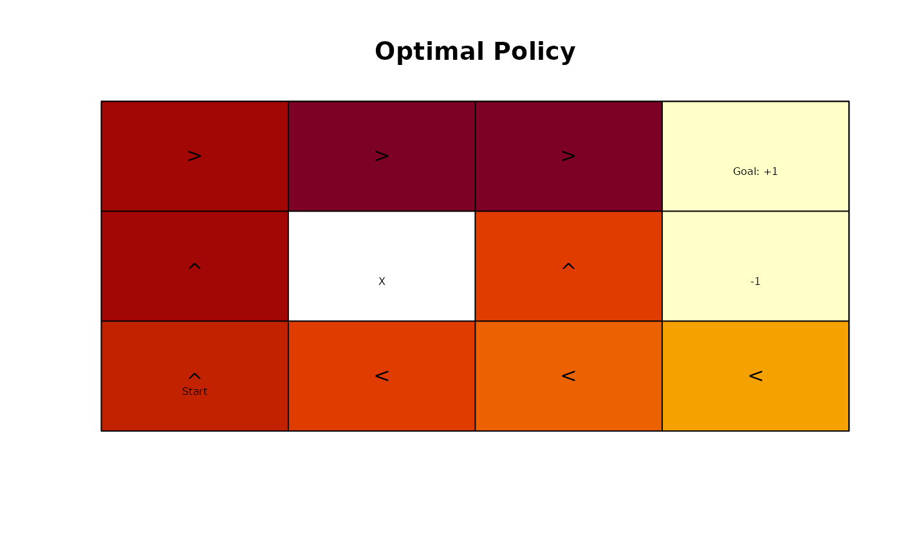
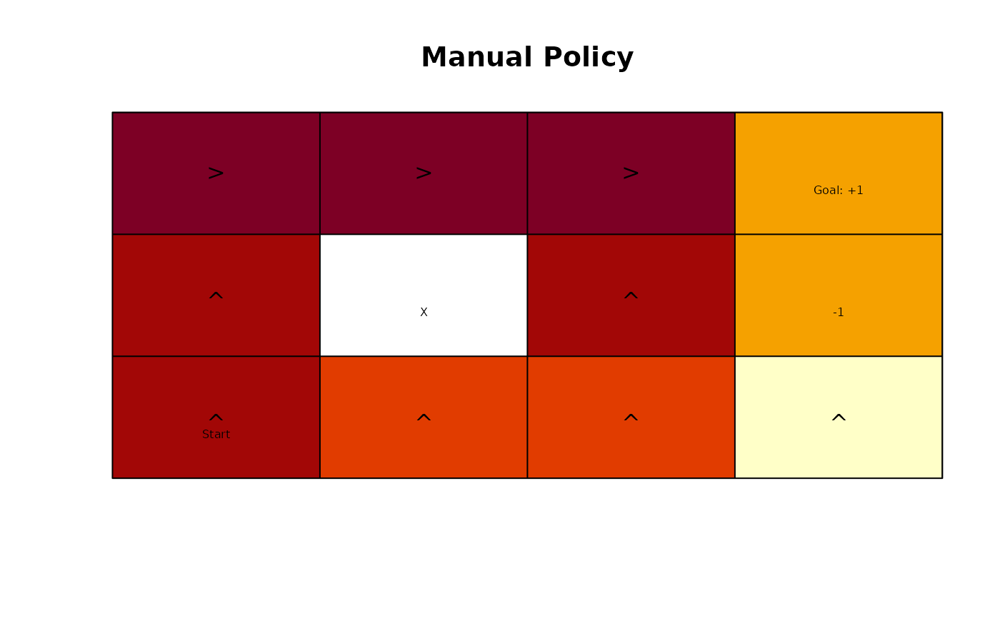
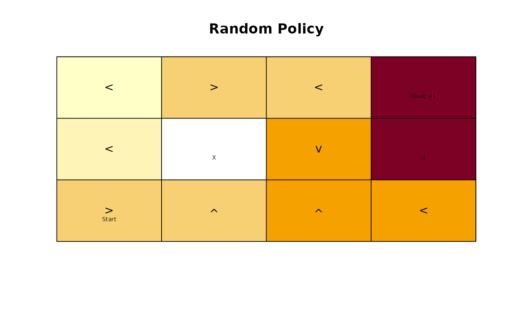
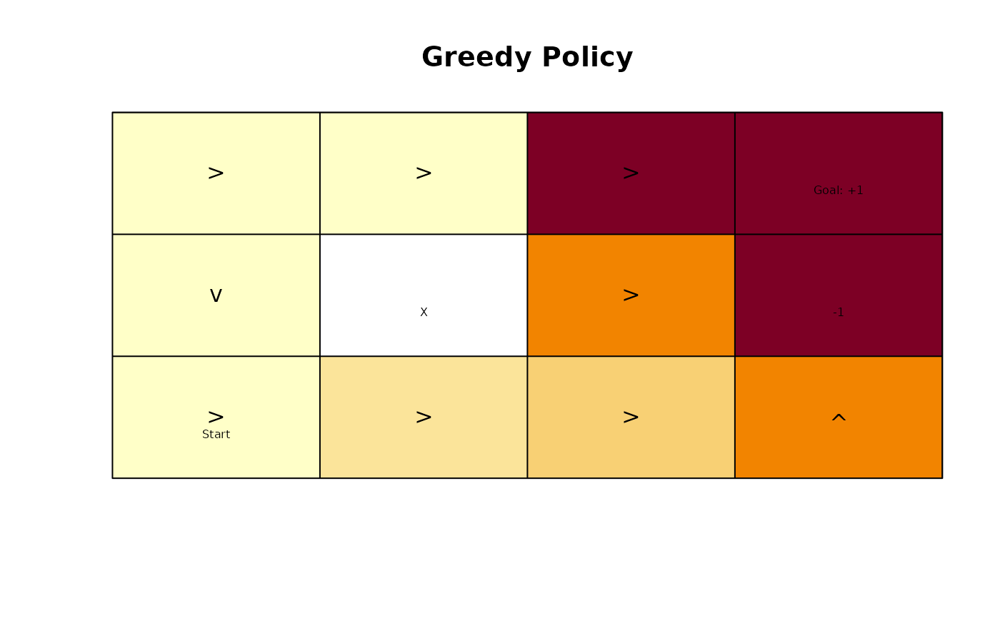
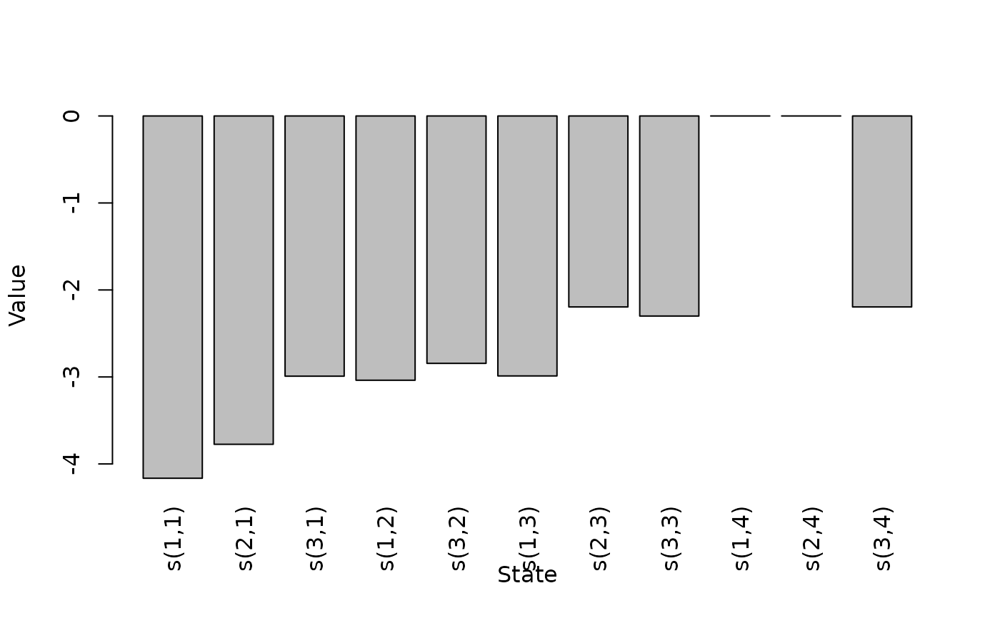
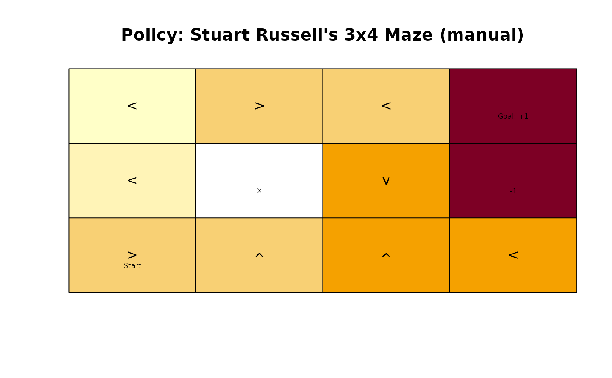

Implements several functions useful for working with MDP policies.
Usage
q_values_MDP(model, U = NULL)
MDP_policy_evaluation(
pi,
model,
U = NULL,
k_backups = 1000,
theta = 0.001,
verbose = FALSE
)
greedy_MDP_action(s, Q, epsilon = 0, prob = FALSE)
random_MDP_policy(model, prob = NULL)
manual_MDP_policy(model, actions)
greedy_MDP_policy(Q)Arguments
- model
an MDP problem specification.
- U
a vector with value function representing the state utilities (expected sum of discounted rewards from that point on). If
modelis a solved model, then the state utilities are taken from the solution.- pi
a policy as a data.frame with at least columns for states and action.
- k_backups
number of look ahead steps used for approximate policy evaluation used by the policy iteration method. Set k_backups to
Infto only use \(\theta\) as the stopping criterion.- theta
stop when the largest change in a state value is less than \(\theta\).
- verbose
logical; should progress and approximation errors be printed.
- s
a state.
- Q
an action value function with Q-values as a state by action matrix.
- epsilon
an
epsilon > 0applies an epsilon-greedy policy.- prob
probability vector for random actions for
random_MDP_policy(). a logical indicating if action probabilities should be returned forgreedy_MDP_action().- actions
a vector with the action (either the action label or the numeric id) for each state.
Value
q_values_MDP() returns a state by action matrix specifying the Q-function,
i.e., the action value for executing each action in each state. The Q-values
are calculated from the value function (U) and the transition model.
MDP_policy_evaluation() returns a vector with (approximate)
state values (U).
greedy_MDP_action() returns the action with the highest q-value
for state s. If prob = TRUE, then a vector with
the probability for each action is returned.
random_MDP_policy() returns a data.frame with the columns state and action to define a policy.
manual_MDP_policy() returns a data.frame with the columns state and action to define a policy.
greedy_MDP_policy() returns the greedy policy given Q.
Details
Implemented functions are:
q_values_MDP()calculates (approximates) Q-values for a given model using the Bellman optimality equation:$$q(s,a) = \sum_{s'} T(s'|s,a) [R(s,a) + \gamma U(s')]$$
Q-values can be used as the input for several other functions.
MDP_policy_evaluation()evaluates a policy \(\pi\) for a model and returns (approximate) state values by applying the Bellman equation as an update rule for each state and iteration \(k\):$$U_{k+1}(s) =\sum_a \pi{a|s} \sum_{s'} T(s' | s,a) [R(s,a) + \gamma U_k(s')]$$
In each iteration, all states are updated. Updating is stopped after
k_backupsiterations or after the largest update \(||U_{k+1} - U_k||_\infty < \theta\).greedy_MDP_action()returns the action with the largest Q-value given a state.random_MDP_policy(),manual_MDP_policy(), andgreedy_MDP_policy()generates different policies. These policies can be added to a problem usingadd_policy().
References
Sutton, R. S., Barto, A. G. (2020). Reinforcement Learning: An Introduction. Second edition. The MIT Press.
Examples
data(Maze)
Maze
#> MDP, list - Stuart Russell's 3x4 Maze
#> Discount factor: 1
#> Horizon: Inf epochs
#> Size: 11 states / 4 actions
#> Start: 0, 0, 1, 0, 0, 0, 0, 0, 0, 0, 0
#>
#> List components: ‘name’, ‘discount’, ‘horizon’, ‘states’, ‘actions’,
#> ‘transition_prob’, ‘reward’, ‘info’, ‘start’
# create several policies:
# 1. optimal policy using value iteration
maze_solved <- solve_MDP(Maze, method = "value_iteration")
maze_solved
#> MDP, list - Stuart Russell's 3x4 Maze
#> Discount factor: 1
#> Horizon: Inf epochs
#> Size: 11 states / 4 actions
#> Start: 0, 0, 1, 0, 0, 0, 0, 0, 0, 0, 0
#> Solved:
#> Method: ‘value iteration’
#> Solution converged: TRUE
#>
#> List components: ‘name’, ‘discount’, ‘horizon’, ‘states’, ‘actions’,
#> ‘transition_prob’, ‘reward’, ‘info’, ‘start’, ‘solution’
pi_opt <- policy(maze_solved)
pi_opt
#> state U action
#> 1 s(1,1) 0.8513071 right
#> 2 s(2,1) 0.8007595 up
#> 3 s(3,1) 0.7409561 up
#> 4 s(1,2) 0.9077989 right
#> 5 s(3,2) 0.6842791 left
#> 6 s(1,3) 0.9578061 right
#> 7 s(2,3) 0.7002680 up
#> 8 s(3,3) 0.6321148 left
#> 9 s(1,4) 0.0000000 left
#> 10 s(2,4) 0.0000000 left
#> 11 s(3,4) 0.4045407 left
gridworld_plot_policy(add_policy(Maze, pi_opt), main = "Optimal Policy")

# 2. a manual policy (go up and in some squares to the right)
acts <- rep("up", times = length(Maze$states))
names(acts) <- Maze$states
acts[c("s(1,1)", "s(1,2)", "s(1,3)")] <- "right"
pi_manual <- manual_MDP_policy(Maze, acts)
pi_manual
#> state action
#> s(1,1) s(1,1) right
#> s(2,1) s(2,1) up
#> s(3,1) s(3,1) up
#> s(1,2) s(1,2) right
#> s(3,2) s(3,2) up
#> s(1,3) s(1,3) right
#> s(2,3) s(2,3) up
#> s(3,3) s(3,3) up
#> s(1,4) s(1,4) up
#> s(2,4) s(2,4) up
#> s(3,4) s(3,4) up
gridworld_plot_policy(add_policy(Maze, pi_manual), main = "Manual Policy")

# 3. a random policy
set.seed(1234)
pi_random <- random_MDP_policy(Maze)
pi_random
#> state action
#> 1 s(1,1) left
#> 2 s(2,1) left
#> 3 s(3,1) right
#> 4 s(1,2) right
#> 5 s(3,2) up
#> 6 s(1,3) left
#> 7 s(2,3) down
#> 8 s(3,3) up
#> 9 s(1,4) up
#> 10 s(2,4) right
#> 11 s(3,4) left
gridworld_plot_policy(add_policy(Maze, pi_random), main = "Random Policy")

# 4. an improved policy based on one policy evaluation and
# policy improvement step.
u <- MDP_policy_evaluation(pi_random, Maze)
q <- q_values_MDP(Maze, U = u)
pi_greedy <- greedy_MDP_policy(q)
pi_greedy
#> state U action
#> 1 s(1,1) -3.2641132 right
#> 2 s(2,1) -3.1877380 down
#> 3 s(3,1) -2.9915664 right
#> 4 s(1,2) -3.0381885 right
#> 5 s(3,2) -2.4486530 right
#> 6 s(1,3) 0.2736505 right
#> 7 s(2,3) -1.3368140 right
#> 8 s(3,3) -2.2456828 right
#> 9 s(1,4) 0.0000000 left
#> 10 s(2,4) 0.0000000 right
#> 11 s(3,4) -1.2575082 up
gridworld_plot_policy(add_policy(Maze, pi_greedy), main = "Greedy Policy")

#' compare the approx. value functions for the policies (we restrict
#' the number of backups for the random policy since it may not converge)
rbind(
random = MDP_policy_evaluation(pi_random, Maze, k_backups = 100),
manual = MDP_policy_evaluation(pi_manual, Maze),
greedy = MDP_policy_evaluation(pi_greedy, Maze),
optimal = MDP_policy_evaluation(pi_opt, Maze)
)
#> s(1,1) s(2,1) s(3,1) s(1,2) s(3,2) s(1,3)
#> random -3.4135356 -3.1743886 -2.6653331 -2.7269652 -2.5609059 -2.6862323
#> manual 0.8515582 0.8015582 0.7112128 0.9078082 0.3894086 0.9578082
#> greedy 0.4785733 -1.1932126 -1.1435748 0.7374446 -1.0874861 0.7874441
#> optimal 0.8515562 0.8015515 0.7452441 0.9078082 0.6951230 0.9578082
#> s(2,3) s(3,3) s(1,4) s(2,4) s(3,4)
#> random -2.0323246 -2.1210620 0 0 -2.0323246
#> manual 0.7002740 0.4745682 0 0 -0.8450611
#> greedy -0.8330045 -1.0374919 0 0 -1.0130542
#> optimal 0.7002740 0.6510268 0 0 0.4271197
# For many functions, we first add the policy to the problem description
# to create a "solved" MDP
maze_random <- add_policy(Maze, pi_random)
maze_random
#> MDP, list - Stuart Russell's 3x4 Maze
#> Discount factor: 1
#> Horizon: Inf epochs
#> Size: 11 states / 4 actions
#> Start: 0, 0, 1, 0, 0, 0, 0, 0, 0, 0, 0
#> Solved:
#> Method: ‘manual’
#> Solution converged: NA
#>
#> List components: ‘name’, ‘discount’, ‘horizon’, ‘states’, ‘actions’,
#> ‘transition_prob’, ‘reward’, ‘info’, ‘start’, ‘solution’
# plotting
plot_value_function(maze_random)

gridworld_plot_policy(maze_random)

# compare to a benchmark
regret(maze_random, benchmark = maze_solved)
#> [1] 3.732126
# calculate greedy actions for state 1
q <- q_values_MDP(maze_random)
q
#> up right down left
#> s(1,1) -4.091767 -3.2641132 -3.779436 -4.165385
#> s(2,1) -4.126343 -3.7747689 -3.187738 -3.774769
#> s(3,1) -3.642707 -2.9915664 -3.016434 -3.109454
#> s(1,2) -3.185540 -3.0381885 -3.185540 -3.979108
#> s(3,2) -2.844152 -2.4486530 -2.844152 -3.001698
#> s(1,3) -2.630405 0.2736505 -1.995958 -2.988619
#> s(2,3) -2.746143 -1.3368140 -2.195413 -2.324989
#> s(3,3) -2.300077 -2.2456828 -2.383794 -2.764556
#> s(1,4) 0.000000 0.0000000 0.000000 0.000000
#> s(2,4) 0.000000 0.0000000 0.000000 0.000000
#> s(3,4) -1.257508 -2.1116964 -2.245683 -2.195413
greedy_MDP_action(1, q, epsilon = 0, prob = FALSE)
#> [1] "right"
greedy_MDP_action(1, q, epsilon = 0, prob = TRUE)
#> up right down left
#> 0 1 0 0
greedy_MDP_action(1, q, epsilon = .1, prob = TRUE)
#> up right down left
#> 0.025 0.925 0.025 0.025